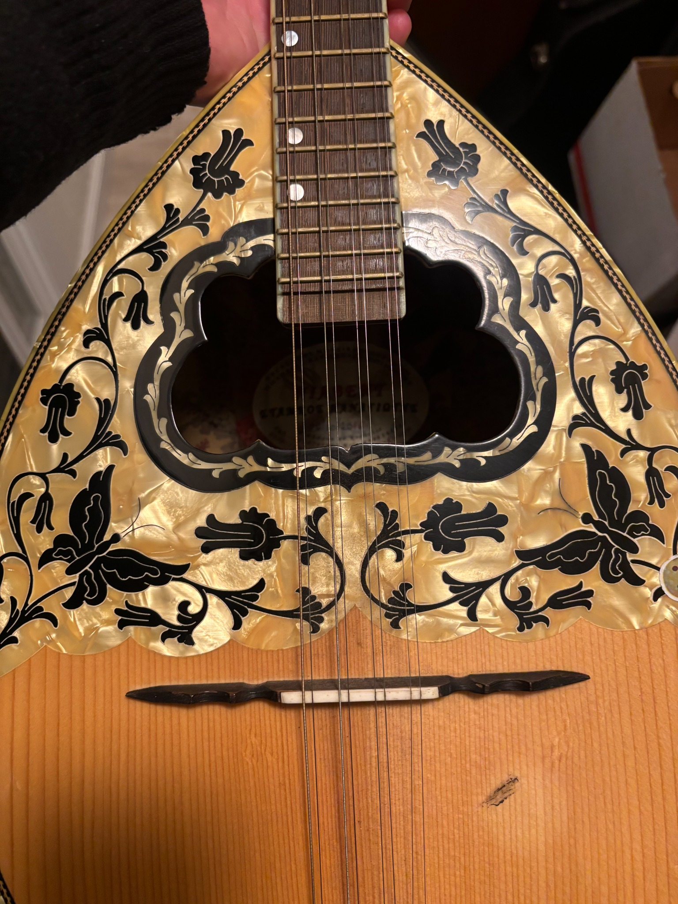

Peter Bonos
Oud & trumpet
Peter contributes oud and trumpet to the ensemble's Turkish and related repertoire.


Duygu & Friends brings Turkish repertoire into an intimate live setting, drawing on acoustic instruments, ensemble interplay and shared musical traditions.
The page will grow as additional photos, recordings, repertoire notes and band-member information are added.

Peter contributes oud and trumpet to the ensemble's Turkish and related repertoire.
A dedicated band gallery will live here.